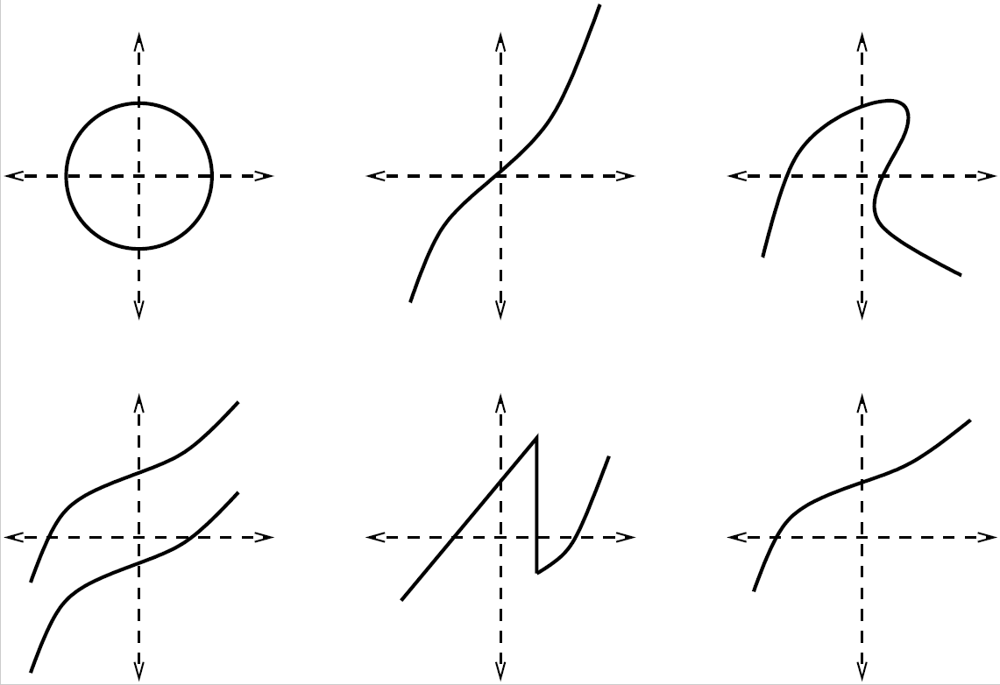

2.1. Boletín 0: Repaso de nociones básicas#
Antes de empezar con la teoría de funciones, vamos a ver lo que recordamos de todo lo que hemos aprendido en cursos anteriores de matemáticas… Intenta hacer los siguientes ejercicios y, si tienes duda en alguno de ellos, ¡repasa a fondo ese tema!
Calcula o simplifica cuando sea posible:
\[\begin{split} \begin{array}{lclclclcl} \text{$({\rm a})$ } \dfrac{5^{\frac{3}{2}}}{\sqrt{5}} & \qquad & \text{$({\rm b})$ } 3^{\frac{3}{2}} \sqrt{3} & \qquad & \text{$({\rm c})$ } 3^{{\frac{3}{2}}} \, 3^{{\frac{1}{2}}} & \qquad & \text{$({\rm d})$ } 3^{{\frac{3}{2}}}+3^{{\frac{1}{2}}} \\ \\ \text{$({\rm e})$ } (3^5)^2 & & \text{$({\rm f})$ } 3^{5+2} & & \text{$({\rm g})$ } 3^5\,3^2 & & \text{$({\rm h})$ } (3^2)^5 & & \text{$({\rm i})$ } (5^{1/2})^{3/2} \end{array} \end{split}\]Simplifica la siguiente expresión:
\[\frac{1}{x-3}-\frac{1}{x+3}+\frac{12}{x^2-9}\]Calcula el resultado de elevar al cuadrado las siguientes expresiones:
a. \(6+a\)
b. \(6-a\)
c. \(-6+a\)
d. \(-6-a\)
El valor de \(\sqrt{16}\) es
a. 4
b. -4
c. tiene dos valores: \(4\) y \(-4\).
Racionaliza:
a. \(\dfrac{\sqrt{x+5}}{\sqrt{x-3}}\)
b. \(\dfrac{\sqrt{x+5}}{\sqrt{x}-3}\)
El siguiente conjunto de puntos, \(A = \left\{ x \in \mathbb{R} \, / \, 3x-5 < 7 \right\}\), es:
a. \(A = (4,+\infty)\)
b. \(A = (-\infty,4)\)
c. \(A = (0,4)\)
d. \(A = (-\infty,12)\)
Calcula los siguientes conjuntos de puntos:
a. \(B = \left\{ x \in \mathbb{R} \, / \, x^2 - 3x + 2 > 6 \right\}\)
b. \(C = \left\{ x \in \mathbb{R} \, / \, 3x - 5 < 7, \, x^2 - 3x + 2 > 6 \right\}\)
c. \(D = \left\{ x \in \mathbb{R} \, / \, -3\leq 2-5x\leq 12 \right\}\)
Una solución de la ecuación \((x-3)^4+\sqrt{x+1}+(x-82)=0\) es:
a. \(x = 1\)
b. \(x = 0\)
c. \(x = \sqrt[4]{\dfrac{2}{3}}\)
d. \(x = \ln\left(\dfrac{2}{3}\right)\)
Para la ecuación \(x(x-3)=1\), las soluciones son:
a. \(x=1\) y [\(x-3=1 \Longrightarrow x=4\)]
b. \(x=\dfrac{3 \pm \sqrt{13}}{2}\)
c. \(x=0\) y \(x=3\)
Resuelve las siguientes ecuaciones:
a. \(\dfrac{1}{x} + \dfrac{1}{x-5} = 3\)
b. \((x-3)(x^2-4x+4)=0\)
c. \(3^x=81\)
Andrés y Pablo viven en dos poblaciones A y B que distan 25 km. Andrés sale de A hacia B caminando a 4 km/h y Pablo irá de B hacia A, en una bicicleta, a 6 km/h (los dos salen al mismo tiempo). En el punto donde se encuentren plantarán un árbol. ¿A qué distancia de A lo plantarán?
Un grupo de amigos quiere repartirse una colección de discos. Si se llevan 3 discos cada uno, sobran 5, y si cada uno cogiese 4 faltaría un disco. ¿Cuántos amigos son y cuántos discos tiene la colección?
El valor de \(i\) es:
a. \(-1\)
b. \(\sqrt{-1}\)
c. no existe
d. \(\pm 1\)
e. \(\pm\sqrt{-1}\)
f. no sé qué es \(i\)
Relación entre grados y radianes:
a. ¿Cuál es la relación entre los ángulos \(45^\text{o}\) y \(\pi\) radianes?
b. ¿Cuántos radianes son \(30^\text{o}\)?
c. Convierte \(75^\text{o}\) a radianes.
d. Convierte \(\dfrac{17}{12}\pi\) radianes a grados.
Los ángulos se darán SIEMPRE en radianes.
La ecuación \(y=3x^2\) representa una
a. circunferencia
b. recta
c. parábola
d. hipérbola
¿Cuáles de los siguientes dibujos podrían representar el gráfico de una función? ¿Por qué?
Se sabe que las ganancias (o pérdidas) en miles de euros por la venta de cierto artículo, que depende del número \(x\) de ventas del mismo, viene dado por \(y(x)= x^2-199x-200\).
a. Determina cuál es la ganancia si vendemos 250 artículos.
b. Determina cuántos artículos debes vender para obtener 19800 euros de ganancia.
c. Determina a partir de qué cantidad de ventas se empieza a obtener ganancia.
d. Dibuja la gráfica de la función ganancias/pérdidas e interprétala.
Asocia cada una de las cinco gráficas con el proceso de llenado de cada uno de los recipientes:


{kind=link}